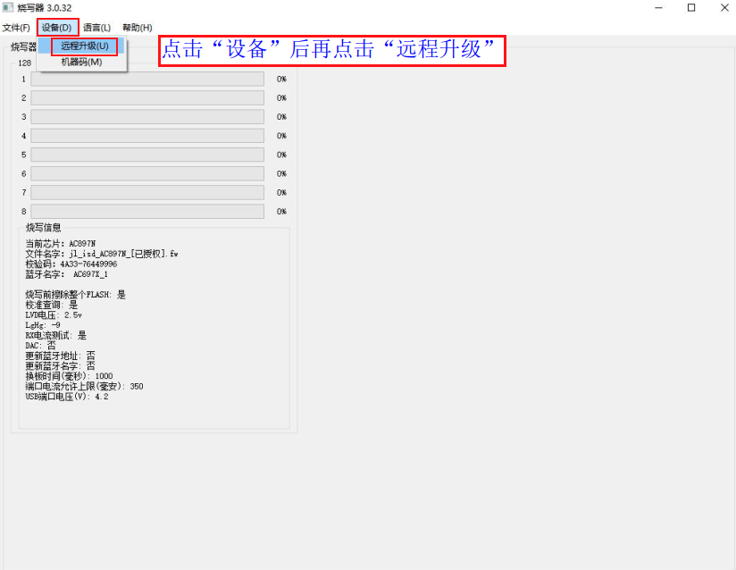
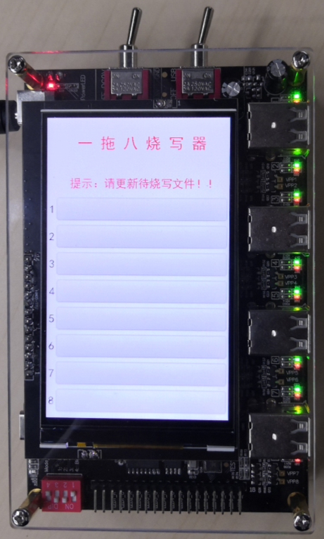
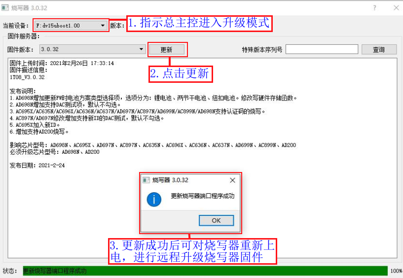

2.4. Remote Upgrade of the Programmer Firmware
2.4.1. Upgrade notes
The 1-to-8 programmer firmware is the firmware of the controller chips (the master controller chip and the 8 channel controller chips) that control the operation of the whole programmer.
The upgrade tool lets you choose one of the 3 latest official release firmware versions for the upgrade. It also supports upgrading to special programmer firmware versions made for specific applications and customer requirements.
The programmer firmware is optimized and upgraded from time to time as needed, to add features, improve performance, fix problems, etc. Under normal circumstances, be sure to upgrade to the latest version promptly; otherwise, programming problems may occur.
2.4.2. Upgrading to official release firmware
Open the remote upgrade control panel
[1] Open the PC tool control panel (see the "Open the PC tool control panel" subsection);
[2] As shown in PC tool control panel, click "Device" (设备) -> "Remote Upgrade" (远程升级) to open the remote upgrade control panel, as shown in Remote upgrade control panel;

PC tool control panel

Remote upgrade control panel
As shown in Remote upgrade procedure:
[1] Select the version to upgrade to from the 3 programmer firmware versions;
[2] Click "Update" (更新);
[3] After a successful upgrade, power-cycle the programmer (unplug the USB data cable from the programmer, then flip the "main power toggle switch" to the left to turn the power off and back to the right to turn it on);
[4] After the power-cycle, the programmer contains no target chip firmware to program. Deploy the .fw, .ufw or .key file built by the SDK to the programmer as described in "Update the target chip firmware on the programmer", and you can then program the device chip firmware. If the upgrade fails, find the cause from the error message and upgrade again.

Remote upgrade procedure
After a successful remote upgrade of the programmer firmware, the startup screen after the power-cycle is as shown in Startup screen after a remote upgrade. You can now update the target chip firmware on the programmer as described in the "Update the target chip firmware on the programmer" subsection.

Startup screen after a remote upgrade
2.4.3. Upgrading to special version firmware
Open the remote upgrade control panel as described in the "Upgrading to official release firmware" subsection.
As shown in Remote upgrade to a special version:
[1] Enter the serial number of the special version to upgrade to;
[2] Click "Query" (查询);
[3] Click "Update" (更新);
[4] After a successful upgrade, power-cycle the programmer (unplug the USB data cable from the programmer, then flip the "main power toggle switch" to the left to turn the power off and back to the right to turn it on);
[5] After the power-cycle, the programmer contains no target chip firmware to program. Deploy the .fw, .ufw or .key file built by the SDK to the programmer as described in "Update the target chip firmware on the programmer", and you can then program the device chip firmware. If the upgrade fails, find the cause from the error message and upgrade again.

Remote upgrade to a special version
2.4.4. Handling upgrade errors
If the upgrade fails for a reason such as a loose USB connection, and an upgrade failure error such as the one shown in Remote upgrade failure error appears, power-cycle the programmer, plug the USB cable in again and repeat the normal upgrade procedure;

Remote upgrade failure error
If the firmware upgrade still fails after restarting the programmer several times, try updating the firmware of the controller chips of the 8 programming channels:
[1] Copy the
burner.exeexecutable to a drive on the PC (follow the steps in "Open the PC tool control panel" to get theburner.exefile; if the programmer's "CD Drive" cannot be opened, get the file from another programmer or from Jieli);[2] Double-click the copied
burner.exeand click "Device" (设备) -> "Remote Upgrade" (远程升级) to open the remote upgrade control panel;[3] Plug the Forced Upgrade Tool into a USB programming port of the programmer, connect it to the PC and put the upgrade tool into upgrade mode, as shown in Updating the firmware of the 8 channel controllers;
[4] When the remote upgrade control panel detects that the Forced Upgrade Tool is connected, click "Update" (更新), as shown in Remote update of the channel controller firmware. After all programming channels have been updated, power-cycle the programmer and then follow the normal procedure for remote upgrade of the programmer firmware.
Note
You only need to copy the
burner.exeexecutable
Updating the firmware of the 8 channel controllers

Remote update of the channel controller firmware
If, after the firmware of the 8 channel controller chips has been updated, the programmer still does not start, the screen stays black at power-on, or the "CD Drive" cannot be opened after the programmer is connected to the PC with a USB cable, try updating the firmware of the programmer's master controller chip:
[1] Copy a
burner.exeexecutable to a drive on the PC (follow the steps in "Open the PC tool control panel" to get theburner.exefile; if the programmer's "CD Drive" cannot be opened, get the file from another programmer or from Jieli);[2] Double-click
burner.exeand click "Device" (设备) -> "Remote Upgrade" (远程升级) to open the remote upgrade control panel;[3] Plug the Forced Upgrade Tool into the "USB update port", connect it to the PC and put the upgrade tool into upgrade mode, as shown in Updating the firmware of the master controller;
[4] When the remote upgrade control panel detects that the Forced Upgrade Tool is connected, click "Update" (更新), as shown in Remote update of the master controller firmware;
Note
You only need to copy one
burner.exeexecutable
Updating the firmware of the master controller

Remote update of the master controller firmware
If the programmer firmware still cannot be upgraded remotely after you have tried the three error-handling procedures above, contact Jieli technical support promptly to have the programmer repaired or replaced.